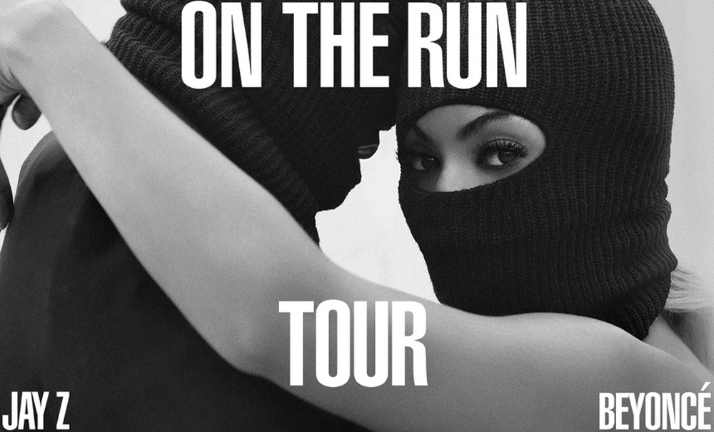
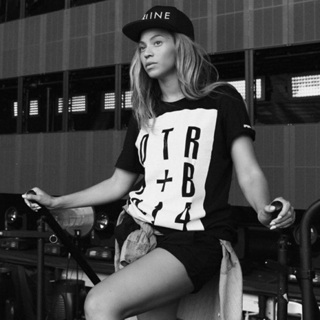

Beyoncé

About
See Grammy Award-winner and amazing performer Beyoncé Knowles live with her husband Jay Z.

Beyoncé has been breaking records and recording platinum albums for over a decade. "Billboard named her female artist of the decade, while the RIAA acknowledged that, through 64 gold and platinum certifications, she was the decade's top-selling artist. Once she released her fifth solo album in 2013, it was evident that the singer, songwriter, and dancer wasn't merely an entertainer but a progressive artist as well.” MTV Biography
Tour Dates
- Jun 25 Miami, FL Sun Life Stadium
- Jun 25 Miami, FL Sun Life Stadium
- Jun 28 Cincinnati, OH Great American Ball Park
- Jul 1 Foxborough, MA Gillette Stadium
- Jul 5 Philadelphia, PA Citizens Bank Park
- Jul 7 Baltimore, MD M&T Bank Stadium
- Jul 9 Toronto, Ont Rogers Centre
- Jul 11 East Rutherford, NJ MetLife Stadium
- Jul 12 East Rutherford, NJ MetLife Stadium
- Jul 15 Atlanta, GA Georgia Dome
- Jul 18 Houston, TX Minute Maid Park
- Jul 20 New Orleans, LA Mercedes-Benz Superdome
- Jul 22 Dallas, TX AT&T Stadium
- Jul 24 Chicago, IL Soldier Field
- Jul 27 Winnipeg, MB Investors Group Field
- Jul 30 Seattle, WA Safeco Field
- Aug 2 Los Angeles, CA Rose Bowl
- Aug 3 Los Angeles, CA Rose Bowl
- Aug 5 San Francisco, CA AT&T Park
- Aug 6 San Francisco, CA AT&T Park
- Sep 12 Paris, France Stade De France
- Sep 13 Paris, France Stade De France
This site is for educational purposes in connection with the Girl Scouts of the USA. All image rights are retained solely by the original sources.
Image Credits:
{kind=link}